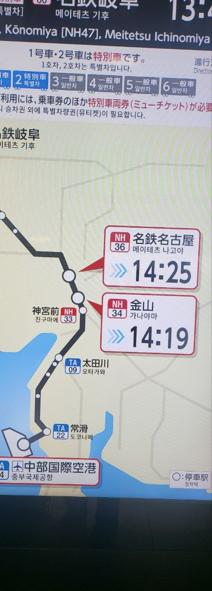
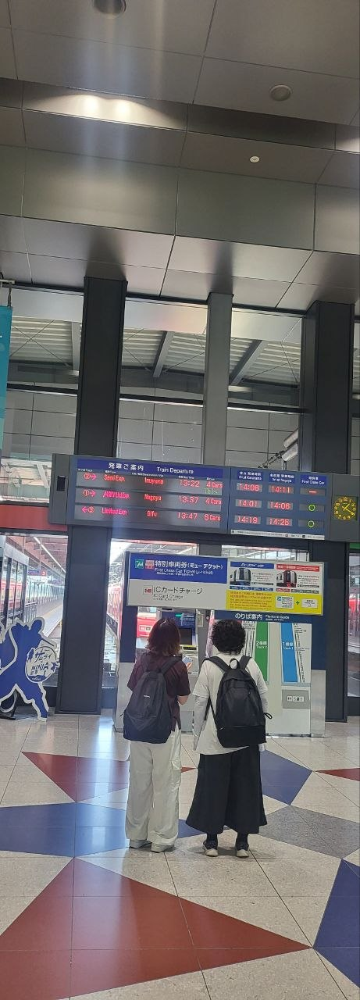
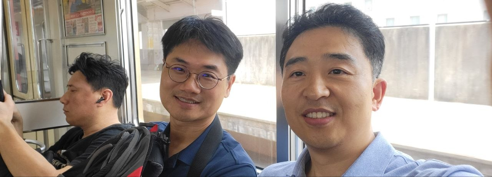
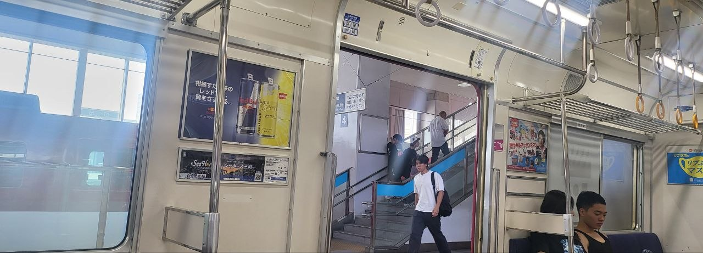
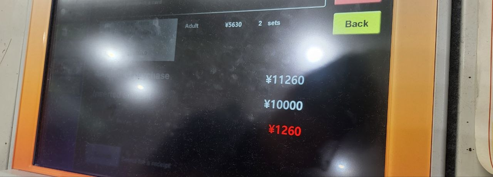
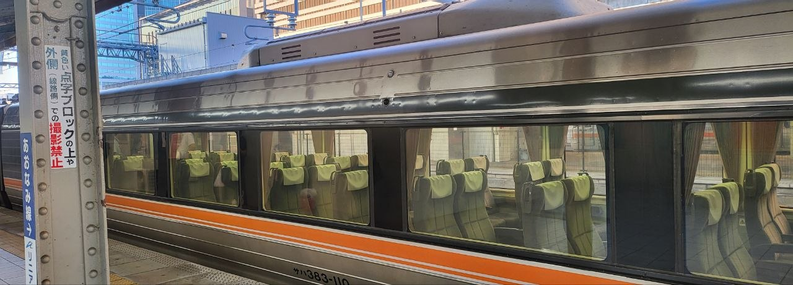

Day 1 · 2026.07.22 수
센트레아에서 마쓰모토까지, 여행보다 이동이 먼저였던 하루
인천에서 나고야로 들어온 뒤, 메이테츠와 JR 시나노를 차례로 갈아타며 결국 마쓰모토역 앞까지 닿았다. 오늘의 주제는 관광보다도 “제대로 도착하는 것”에 가까웠다.

첫 장면
나고야 공항에 내려 바로 시내로 들어가는 표지판을 확인했다. 목적지는 마쓰모토였지만, 그 전에 메이테츠나고야와 JR 나고야를 정확히 이어 붙여야 했다.
오늘의 짧은 소감
여행의 첫날은 멋진 풍경보다도 동선을 실수 없이 맞추는 것이 더 중요했다. 낯선 역 이름들이 많았지만, 한 번씩 확인하며 전진하니 결국 길은 이어졌다.





하루 마무리
긴 이동 끝에 마쓰모토역 앞에 섰다. 공항과 환승역의 분주함이 지나가고, 그제야 여행이 조금 느려지기 시작했다. 오늘은 관광지를 많이 보지 못했지만, 내일을 위한 위치에 정확히 도착했다는 것만으로도 충분한 첫날이었다.